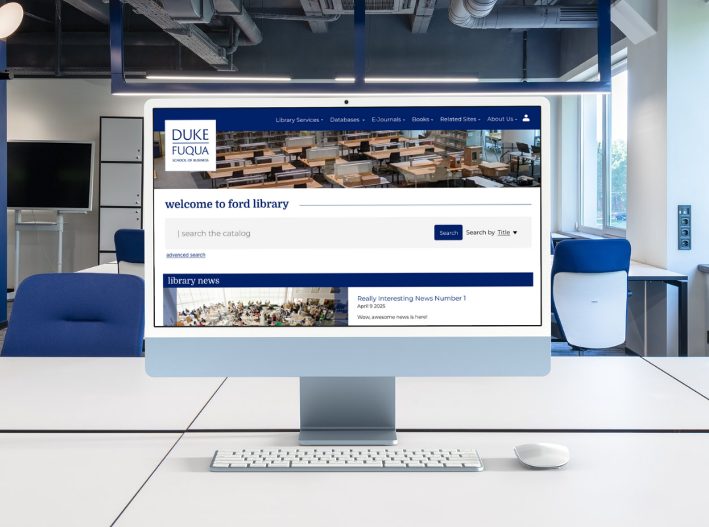
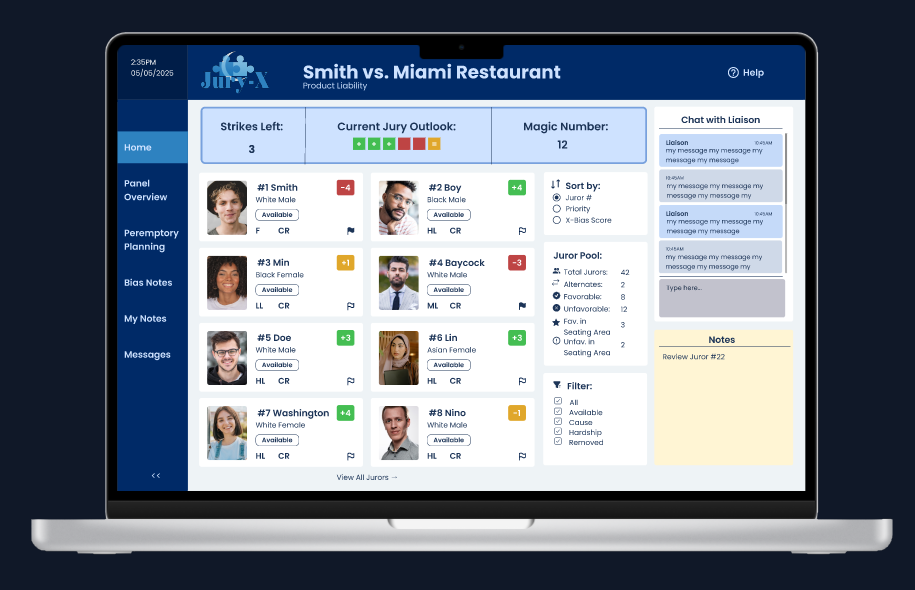
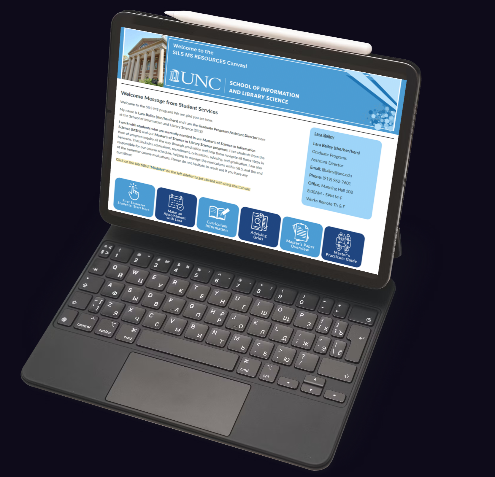

Designing with soul & structure.
Duke Fuqua Library Study & Redesign
A research-based redesign to improve information access for MBA students through testing, insights, and reorganization.

View Case StudyVa11 HALL-A Cyberpunk Point-of-Sale Design
An imaginative bartending interface designed to fit into the world of the game "Va11 HALL-A."
 View Case Study
View Case Study
Jury-X Attorney Dashboard
Jury-X's internal dashboard is very complex and hard for attorneys to understand at a glance. Enter: a dashboard tailored to the attorney clients of Jury-X.

View Case StudyUNC SILS Canvas Redesign
A usability-driven overhaul of a student resource site, improving clarity, navigation, and mobile accessibility.

View Case Study